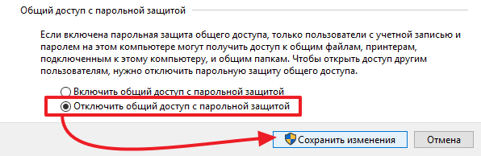
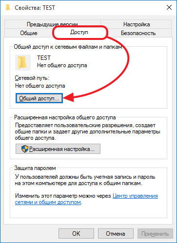
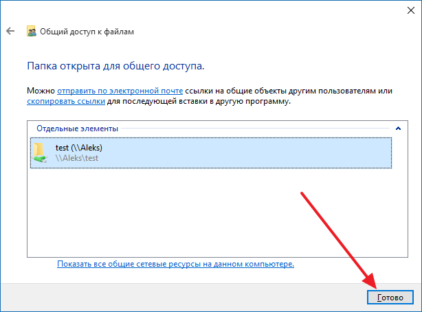
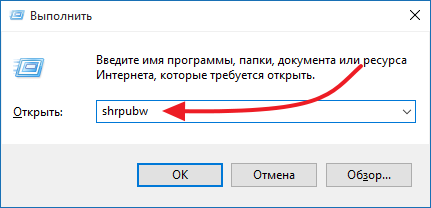
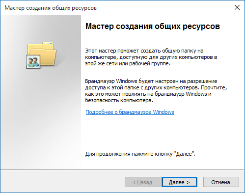

Как открыть общий доступ к папке в Windows 7, 8 или 10
Для того чтобы нормально пользоваться локальной сетью, нужно уметь открывать общий доступ к папкам. В данном материале мы расскажем о том, как открыть общий доступ к папке в Windows 7, 8 или 10, а также расскажем какие настройки нужно сделать на компьютере, для того чтобы доступ к папкам работал нормально.
Настройка компьютера перед открытием доступа к папкам
Перед тем как открывать доступ к папкам нужно убедиться, что компьютер правильно настроен. Иначе вы не сможете получить доступ к нужным вам папкам. Для этого перейдите по пути «Пуск – Панель управления – Сеть и Интернет – Центр управления сетями и общим доступом». В этом окне нужно нажать на ссылку «Изменить дополнительные параметры общего доступа».
После этого перед вами откроется окно с настройками общего доступа. В данном окне должны быть включены все функции кроме «Общий доступ с парольной защитой». Данную функцию нужно отключить и нажать на кнопку «Сохранить изменения».

Если не отключить данную функцию, то при попытке получить доступ к папке придется вводить пароль.
Как открыть общий доступ к папке в Windows 7, 8 или 10
Открыть общий доступ к папке в Windows 7, 8 или 10 довольно просто. Для начала кликните правой кнопкой мышки по нужной папке и выберите пункт «Свойства».

После этого перед вами появится окно со свойствами папки. В этом окне нужно перейти на вкладку «Доступ» и нажать там на кнопку «Общий доступ».

Дальше появится окно «Общи доступ к файлам». В данном окне нужно открыть выпадающее меню и выбрать в нем пункт «Все», после этого нажать на кнопку «Добавить».

В результате в списке пользователей, которые имеют доступ к папке должен появиться пользователь с именем «Все». По умолчанию у этого пользователя будет разрешение только на чтение папки. при необходимости вы можете изменить права пользователя нажав на кнопку «Чтение». Для того чтобы подтвердить открытие доступа к папке нажмите на кнопку «Поделиться».

После этого появится окно с названием общей папки. Здесь нужно просто нажать на кнопку «Готово».

На этом открытие доступа к папке завершено.
Альтернативный способ открытия доступа к папке
Также существует альтернативный способ открытия доступа к папкам. Для того чтобы воспользоваться данным способом нажмите комбинацию клавиш Windows+R и в открывшемся окне введите команду shrpubw.

После этого перед вами должен появиться «Мастер создания общих ресурсов». С его помощью можно быстро и легко открыть доступ к папке. Для того чтобы приступать к созданию общей папки просто нажимаем на кнопку «Далее».

Первый шаг — это выбор папки, доступ к которой вы хотите открыть. Выберите нужную папку и нажмите на кнопку «Далее».

Дальше нужно указать название для общей папки и нажать на кнопку «Далее». Если не хотите менять название, то можете оставить стандартное.

Завершающий этап – выбор разрешений на доступ к папке. Выберите подходящие вам правила доступа к папке и нажмите на кнопку «Готово».

На этом настройка завершена. Для того чтобы открыть доступ к папке осталось еще раз нажать на кнопку «Готово».

При необходимости на этом этапе можно включить функцию повторного запуска «Мастера создания общих ресурсов».